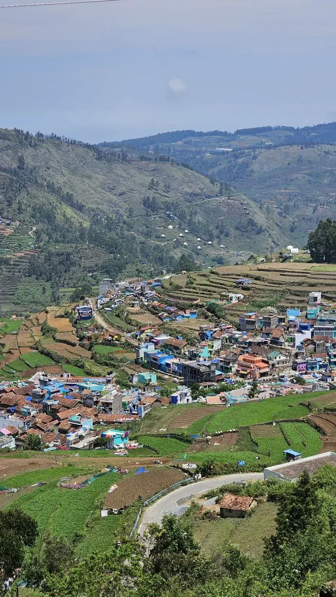

Airport & railway pickups
Madurai to Kodaikanal Cab: Fare, Route and Distance
The private Madurai to Kodaikanal cab from Cottages Kodaikanal covers the 120 km in 3.5 to 4 hours. Best for flyers, train travellers, families and groups who want a driver for the ghat road.
- Pickup
- IXM airport, Junction or home
- Via
- Dindigul · Batlagundu
- Vehicle
- Sedan to coach
- Confirmed
- Same day
Fare sheet
Madurai to Kodaikanal Taxi Fare, Cab Fare and Charges
Madurai to Kodaikanal taxi charges by vehicle: the cab fare from Madurai to Kodaikanal for a one-way pickup/drop, or a 2-day / 3-day round trip package with sightseeing.
Fares are 2026 starting prices. Toll and hill-station entry charges, if any, are added at actuals.
Arrival gates
Is Madurai Airport to Kodaikanal Taxi Service Available?
Yes. Madurai Airport (IXM) and Madurai Railway Station are our two most-booked pickup points for a Madurai to Kodaikanal transfer, and we cover the return leg too.
Madurai Airport
IXM · flight-tracked- Arrive at IXM
- Meet your driver at arrivals
- Load your luggage
- Drive straight up to Kodaikanal
Your driver tracks the flight, so a delay doesn't mean a missed pickup, and the climb starts straight away. Book airport pickup →
Is Madurai Railway Station Transfer Available?
Madurai Junction · both ways- Madurai Station → Kodaikanal
- Kodaikanal → Madurai Station
- Pickup & drop both ways
- Waiting time included
Your driver waits if your train runs late, at no extra charge for a reasonable delay. Book station transfer →
The distance
How Far Is Madurai to Kodaikanal?
About 120 km by road, most of it flat highway through Dindigul, Oddanchatram and Batlagundu before the road turns uphill into the Palani Hills. The final stretch is the ghat section: around 20 km of switchbacks that gain most of Kodaikanal's 2,100 metre elevation in one go, which is why the last leg feels longer than the distance suggests. Here a driver who knows the Madurai to Kodaikanal bends earns the fare.
How Much Time Does the Journey Take?
A non-stop run takes 3.5 to 4 hours. Add a breakfast break near Dindigul or a photo stop on the ghat road and it's closer to 5 hours. Early-morning flights or trains usually mean the cleanest run up, before afternoon traffic builds in peak season, so we time every Madurai to Kodaikanal pickup to your arrival.
Which Route Should You Take from Madurai to Kodaikanal?

Madurai to Dindigul
The fastest, flattest stretch of the Madurai to Kodaikanal drive. Start early to make up time.

Dindigul to Batlagundu
Via Oddanchatram. A good, unhurried stretch for breakfast and a rest before the road begins to climb.

The Ghat Section
About 20 km of hairpins through forest. A driver who knows every bend matters most here.

Kodaikanal Town
The road opens out near the lake, and your Madurai to Kodaikanal drive ends at your door.
Choose your way
Madurai to Kodaikanal Cab or Taxi: How Should You Travel?
Going from Madurai to Kodaikanal by cab is the most booked option, and our Madurai to Kodaikanal travels run round the clock. Madurai, home to the Meenakshi Amman Temple, an international airport and a major rail junction, is the usual gateway. Four ways to cover the 120 km:
Cab
Door-to-door and private, with flexible stops. You leave when you're ready.
Bus
Cheapest on paper, but fixed timings. A cab leaves when you do.
Flight + Cab
Land at IXM, and your driver takes the cab straight up the ghat.
Self Drive
Possible if you know the ghat road, but a driver handles the bends.
Can You Book a One-Way or Round-Trip Cab?
Yes: one way for the drop, or a round trip with the same driver.
One way
For travellers who only need the drop to Kodaikanal and will return a different way or on a later date.
Round trip
Same cab and driver for the whole Madurai to Kodaikanal trip, with a fixed return date. Usually the better rate per kilometre.
Beyond the transfer
Madurai to Kodaikanal Trip: Can You Book a Tour Package?
Yes. For a Kodaikanal trip from Madurai, combine your cab with stay and sightseeing, from a Madurai to Kodaikanal one day tour package to a full three-day trip. A Kodaikanal tour from Madurai is priced per vehicle.
2-Day Kodaikanal Getaway
Transfer from Madurai, one night's stay, and a full day covering the lake, Coaker's Walk and Pillar Rocks. The pace most first-time visitors prefer.
3-Day Kodaikanal Package
A relaxed pace with a full extra day for Guna Cave and the pine forests, without rushing the Madurai to Kodaikanal drive up or back.
See all Kodaikanal tour packages.
A day in Kodaikanal
Can You Explore Kodaikanal Sightseeing by Cab?
Yes. The same cab that brings you in can spend a full day on local sightseeing, at your pace, and a Madurai to Kodaikanal booking can include it.
- 09:00
Kodaikanal Lake
A slow lap around the star-shaped lake while the morning mist thins.
- 11:00
Coaker's Walk
A short cliffside walk with valley views on a clear day.
- 13:00
Lunch break
Your driver waits while you eat, rest and plan the afternoon.
- 15:00
Pillar Rocks & Guna Cave
Three granite cliffs, then the rock caves made famous by the film Guna.
- 17:00
Green Valley View
The widest open view on the route back into town, before dusk.
- 18:00
Homemade chocolate shopping
An easy last stop in the town centre, before the drive back.
What Are the Best Places to Visit in Kodaikanal?
Plan your trip
Best Time to Travel from Madurai to Kodaikanal
April to June is the best time for pleasant weather; Kodaikanal suits every season.
Summer
The most popular season. Book your Madurai to Kodaikanal cab a few days ahead.
Monsoon
Lush greenery and full waterfalls; watch for landslide caution notices on the ghat.
Winter
Cold, misty mornings and clear afternoons. Pack warm layers for the evening drive.
Book in minutes
How Can You Book a Madurai to Kodaikanal Cab or Taxi?
Booking a Madurai to Kodaikanal taxi is a quick WhatsApp message or phone call.
- PickupAirport, railway station or address in Madurai
- DateAnd your preferred pickup time, early or late
- VehicleSedan, SUV, tempo traveller or coach by group size
- ConfirmDriver and fare confirmed the same day
Guest reviews
What Our Guests Say
Our cabs and jeeps are run by the same family that hosts these guests.
We booked a family cottage for five of us and it never felt cramped. Staff arranged everything from bonfire wood to breakfast timing.
Traveled from Bengaluru for a college reunion — the group stay cottage fit all ten of us with room to spare.
Our honeymoon stay had exactly the privacy we wanted — hills outside the window, a fireplace for the cold evenings.
Find us
Where Are We Located?
Cottages Kodaikanal, Near Zion School Junction, MM Street, Lawsghat Road, Kodaikanal - 624101.
Open in Google Maps · Directions from Madurai · Call +91 75023 45777
Where Can You Start Your Trip From?
From Coimbatore, Madurai, Dindigul, Palani or Kodai Road.
Questions
Frequently Asked Questions
Distance & journey
The road distance from Madurai to Kodaikanal is about 120 km via Dindigul and Batlagundu, around 3.5 to 4 hours by cab.
The drive runs through Dindigul, Oddanchatram and Batlagundu, with Batlagundu being the main stop before the 20 km ghat climb begins.
Typically 3.5 to 4 hours non-stop. With a breakfast or photo stop, plan for closer to 4.5 hours, longer at weekends.
It's driveable, but we recommend arriving before dusk where possible — the hairpin bends are easier to judge in daylight, especially in mist.
Fare & booking
Fares start from ₹3,800 for an Etios, ₹5,500 for a Tavera, ₹5,800 for an Innova, ₹7,500 for a Tempo Traveller, and ₹8,500 for a Coach, depending on your date.
Yes — round trips are usually a better per-kilometre rate since the same cab and driver stay with you for the return leg, keeping the Madurai to Kodaikanal fare simple.
Share your pickup point, travel date and preferred vehicle over WhatsApp or by phone, and we confirm your driver and fare the same day, so you know who collects you.
A day's notice is usually enough, though weekends and festival periods are safer booked a few days ahead, especially for a Madurai to Kodaikanal cab in summer.
Airport & vehicles
Yes — Madurai Airport (IXM) is one of our most common pickup points for a Madurai to Kodaikanal transfer, with drivers tracking your flight.
Your driver tracks the flight status and adjusts pickup time accordingly, at no extra charge for reasonable delays, so you never rebook.
Sedans for up to 4 passengers, SUVs or Innovas for up to 7, and tempo travellers for groups of 9 to 17, plus a coach for larger parties.
SUVs handle the ghat bends most comfortably for families or anyone prone to motion sickness, though sedans manage the route fine if luggage is light.
Packages
Yes — one, two and three day packages combine your Madurai to Kodaikanal transfer with stay and sightseeing in Kodaikanal.
Your transfer from Madurai, one night's stay, and a full day of sightseeing covering the lake, Coaker's Walk and Pillar Rocks.

Ready for Kodaikanal?
Madurai → Kodaikanal. One-way, round trip or airport pickup, confirmed the same day.